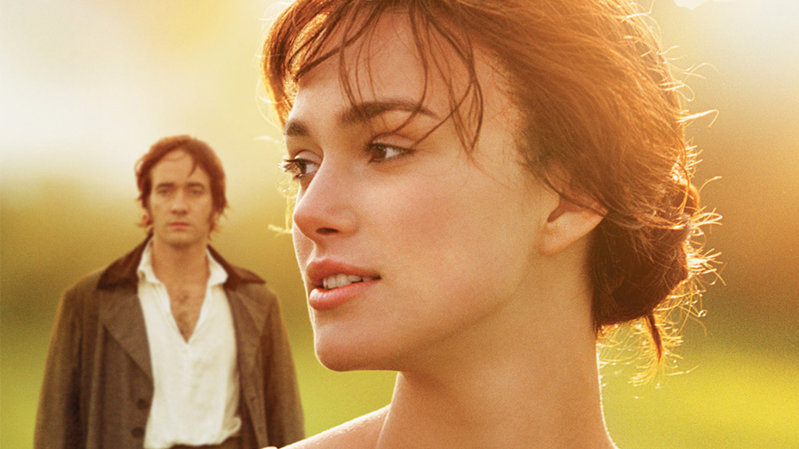
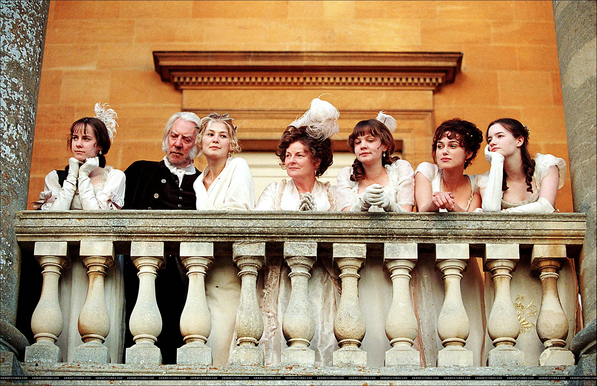
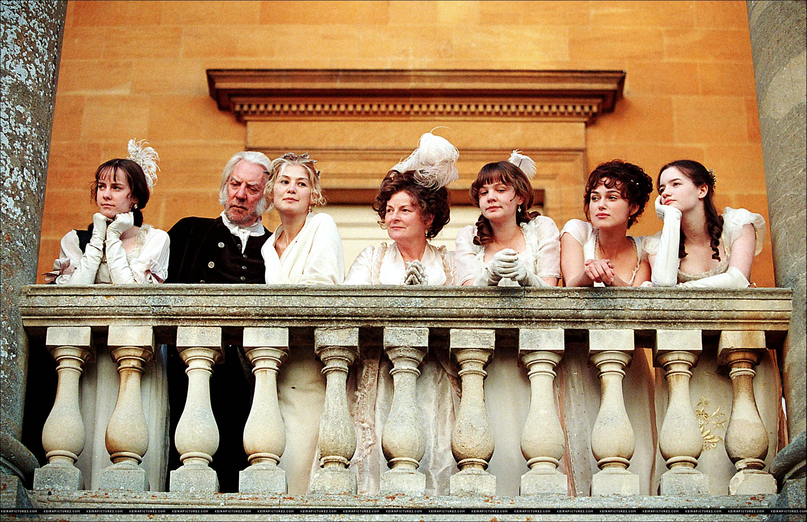
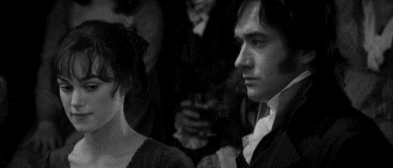
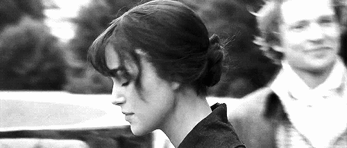
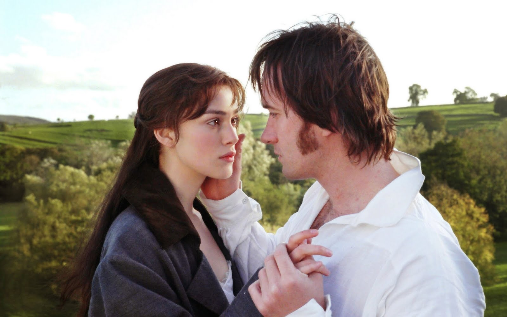

SOBRE O LIVRO
Orgulho e preconceito é o livro mais famoso de Jane Austen, publicado pela primeira vez em 1813, que tem como pano de fundo a burguesia inglesa do início do século XIX e possui uma série de personagens inesquecíveis e um enredo memorável. Austen nos apresenta Elizabeth Bennet como heroína irresistível e seu pretendente aristocrático, o sr. Darcy. Nesse livro, aspectos diferentes são abordados: orgulho encontra preconceito, ascendência social confronta desprezo social, equívocos e julgamentos antecipados conduzem alguns personagens ao sofrimento e ao escândalo. O livro pode ser considerado a obra-prima da escritora, que equilibra comédia com seriedade, observação meticulosa das atitudes humanas e sua ironia refinada. O clássico inglês foi adaptado para o cinema quatro vezes, a versão mais consagrada ganhou as telas em 2005 sob a direção de Joe Wright.

RESUMO
Tudo começa quando o Sr. Bingley vai passar uns dias na propriedade vizinha à dos Bennet. O jovem, suas duas irmãs (Caroline e Louisa), seu cunhado (o Sr. Hurst) e um amigo (o Sr. Darcy) tornam-se a novidade na cidadezinha de Meryton. Todos gostam de Bingley; porém, o jeito reservado de Darcy faz com que antipatizem com ele. A irmã de Elizabeth — Jane — e Bingley acabam se envolvendo amorosamente, mas as irmãs do rapaz não veem com bons olhos o relacionamento, pois consideram Jane integrante de uma família socialmente inferior. Dessa família, vale destacar o personagem Sr. Bennet, pai de Elizabeth, um homem inteligente e irônico. Ele é descrito como “uma mescla tão estranha de tiradas rápidas, humor sarcástico, reserva e capricho”. Enquanto sua esposa é “uma mulher de compreensão medíocre, pouca informação e de temperamento incerto”, cujo sentido da vida é casar as filhas.
.jpg "Sr. Darcy e os Bingles chegando na festa") 

O ápice acontece em uma festa, quando Darcy se mostra indiferente a Elizabeth, que tem o orgulho ferido. Essa personagem é uma jovem inteligente, sagaz, que logo se antipatiza com Darcy. A relação entre os dois é, portanto, pautada pelo preconceito, pela atração, pela paixão e pela raiva. Um misto de sentimentos completamente discrepantes.


Mr.Darcy, depois de muito relutar com os seus sentimentos, toma coragem e pede a moça em casamento. Elizabeth, contudo, permanece firme nos seus ideais e recusa o pedido ao enxergar nele um homem prepotente e inescrupuloso.
Aos poucos, a jovem acaba por perceber que o rapaz tem boa índole e admite os seus sentimentos. As coisas mudam especialmente depois do recebimento de uma carta que Mr.Darcy escreve à ela justificando as suas atitudes. Após a leitura, Elizabeth consegue ver que há ali um homem de bem. Felizmente Mr.Darcy reitera o pedido de casamento e Elizabeth afinal aceita. O casal vai viver em Pemberley. Desse modo, a jovem protagonista Elizabeth, uma mulher inteligente, de personalidade forte, com pensamento independente, precisa vencer o orgulho e o preconceito para encontrar a felicidade.
